Perilaku seks bebas adalah perilaku seksual remaja yang dilakukan tanpa adanya ikatan pernikahan. Biasanya perilaku seks bebas sering dilakukan tanpa adanya ikatan pernikahan. Biasanya perilaku seks bebas sering dilakukan saat remaja berpacaran. Perilaku ini merupakan akibat dari perkembangan biologis sehingga mendorong hasrat seksualnya. Seks bebas sering dikaitkan sebagai perilaku seks yang berisiko tinggi terkena infeksi menular seksual atau IMS. IMS (Infeksi Menular Seksual) ini ditularkan dari satu orang ke orang lainnya melalui aktivitas seks, baik melalui vaginal, oral, ataupun anal. Infeksi ini mencakup berbagai penyakit seperti sifilis, gonore, HIV/AIDS, herpes genital, klamidia, dan lainnya. Remaja berisiko terkena IMS meski mereka masih muda.
TutupAPA SIH PERILAKU SEKS BEBAS ITU?
Perilaku seks bebas adalah perilaku seksual remaja yang dilakukan tanpa adanya ikatan pernikahan. Biasanya perilaku seks bebas sering dilakukan...
PENYULUHAN BAHAYA SEKS BEBAS

Tau gak sih kamu? bahwa seks bebas itu sangat bahaya buat tubuh kamu, karena seks bebas selain merusak pola pikir kamu dan mental kamu, dia....
Tau gak sih kamu? bahwa seks bebas itu sangat bahaya buat tubuh kamu, karena seks bebas selain merusak pola pikir kamu dan mental kamu, dia juga bisa merusak tubuh kamu loh (jahat banget yah). Nah maka dari itu, kamu harus jauhin yang namanya seks bebas yaa. Mulai dari mana sih harus memulai? Nah.. Berikut adalah beberapa tips sederhana supaya kamu bisa terhindari dari perilaku seks bebas:
1. Selektif dalam memilih teman
2. Berpendirian Kokoh
3. Perbanyak Kegiatan Positif
PENYALAHGUNAAN DIGITAL TERHADAP SEKS BEBAS

Salah satu dampak negatif yang ditimbukan dari penggunaan media sosial adalah seks bebas. Sebagian besar remaja melakukan perilaku seksual pranikah pertama kali yaitu pada saat usia Sekolah Menengah Atas atau sederajat yaitu pada usia 15- 18 tahun. Dampak negatif yang dilakukan setelah perilaku seksual pranikah diantaranya adalah Kehamilan Tidak Diinginkan (KTD), aborsi, hingga penyakit menular seksual lainnya.
Tutup

Waspada! Seks Bebas Berpotensi Menularkan Penyakit Berbahaya ke Janin